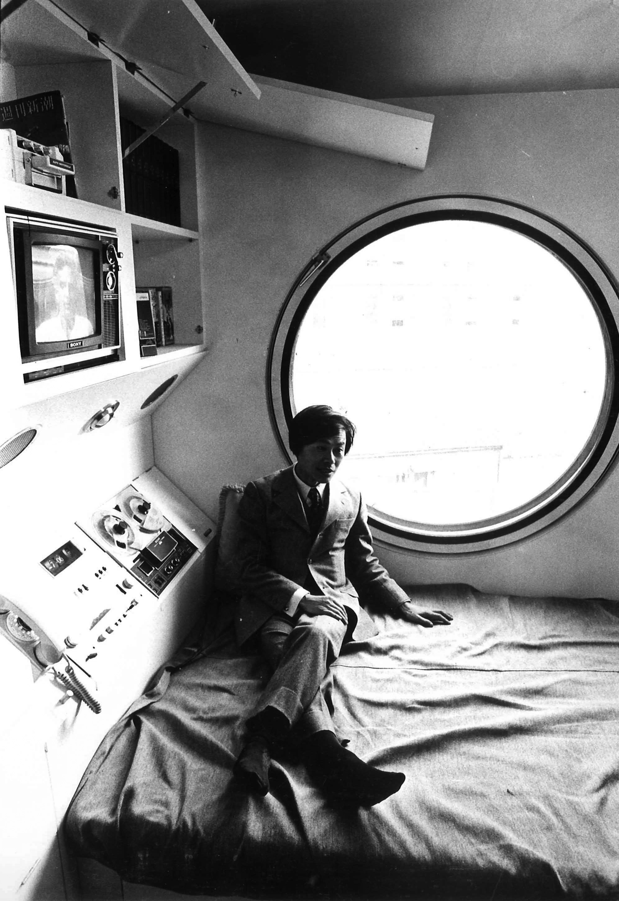
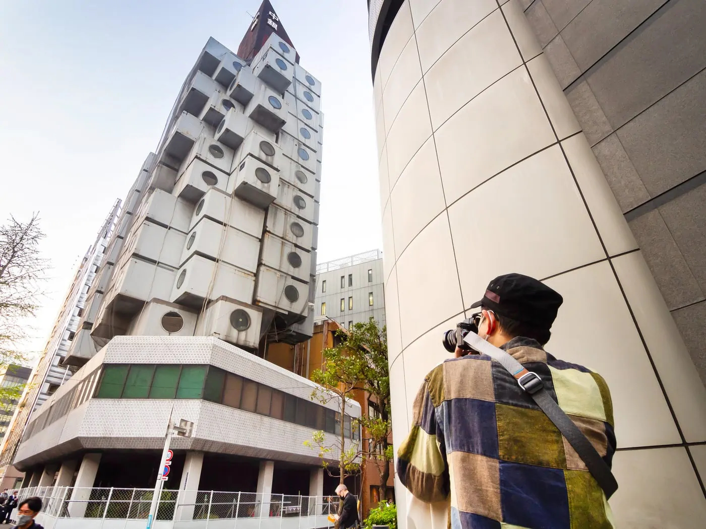
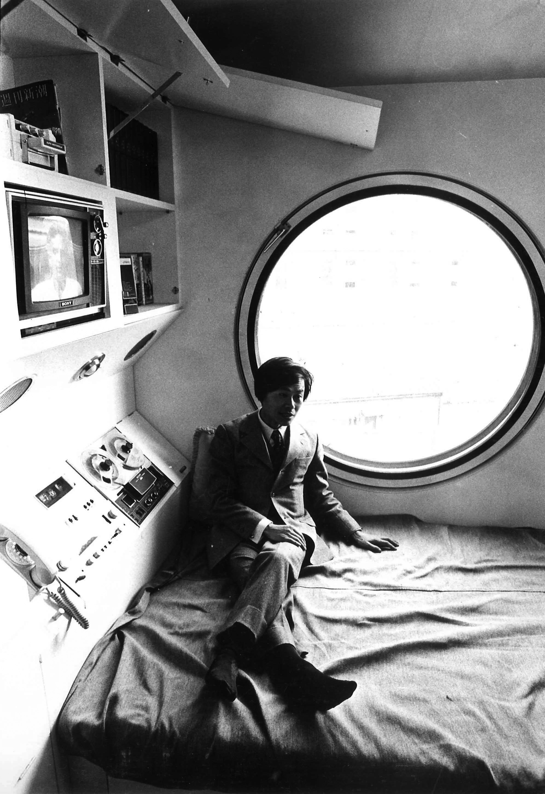
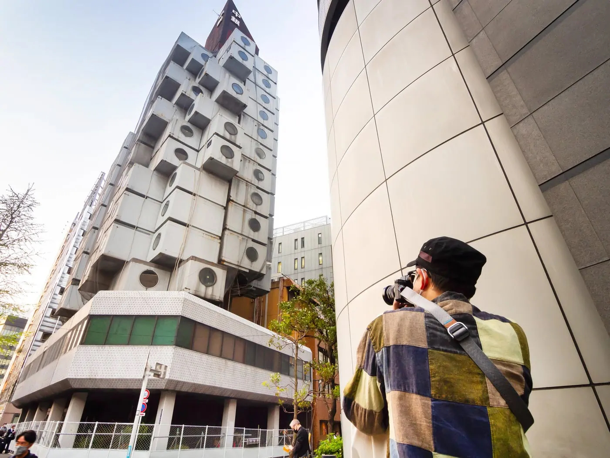

Failure
When Nakagin Capsule Tower was unveiled in 1972, Japan Architect dedicated the entire October 1972 issue to capsule architecture, featuring Kurokawa’s building, discussing its potential impact, and projecting an optimistic future for capsule architecture. As the world’s first fully built capsule building, Nakagin Capsule Tower introduced a number of revolutionary ideas in design. It helped establish a new building type, the capsule hotel, that provided a compact and efficient accommodation unique to Japanese cities. Furthermore, some portions of the design of Nakagin Capsule Tower later made their way into industrial products, such as the prefabricated integrated bathroom. Kurokawa envisioned the capsule building as a new prototype for prefabricated housing that would unleash the power of mass production in urban settings. However, this vision was not realized due to the high costs of the innovative construction and the small, standardized units that only accommodated the needs of a single person. In the 39 years since its construction, Nakagin Capsule Tower became more or less a monolithic and static icon in the midst of the bustling and fast-changing Ginza district, commemorating the ideal of a metabolic city but no longer participating in its processes.
Kurokawa designed the capsules to have a twenty-five to thirty-five year lifespan. Ironically, contemporary cities like Tokyo are growing and transforming so rapidly that their change outpaces the generational “metabolism” envisioned by the Metabolists, and change at this pace operates on the scale of the entire building instead of components, such as the capsules. Hence the plan to demolish the Capsule Tower – and it is not an isolated case. In fact, a few famous Metabolist buildings have been torn down in the last decade even though these buildings were still in sound condition. In 2006 Kurokawa lost his Sony Tower, Nakagin Capsule Tower’s sister building in Osaka. Kikutake’s Sofitel Tokyo, a 1994 building characterized by a dynamic form emblematic of the architect’s concept of “Tree-shaped Community,” was torn down in 2007 after only thirteen years of service. Going back a little further, Tange’s iconic Tokyo City Hall in Marunouchi district, completed in 1957, was demolished in 1992 to make room for Rafael Viñoly’s Tokyo International Forum after a new city hall – also by Tange – had been erected in Shinjuku in 1991.
Extremely high land costs in major Japanese cities and the constant desire to maximize land value have driven the decisions to tear down each of these examples of the Metabolist legacy. According to historian Botand Bognar, the average construction cost of a building in a large city in Japan accounts for only about 10 percent of the land on which it sits; this results in more renovations and redevelopments in Japan than in most other nations. Landmark buildings designed by renowned architects are no exception. The Metabolist buildings were hit particularly hard because, paradoxically, the rigorous megastructure-capsule distinctions offer little flexibility in terms of occupancy and structural expansion. In addition, because the Metabolist architects expressed each capsule on the façade in order to represent the individuality of their occupants, the floor-area ratios of Metabolist buildings are often below average, making them less economically viable. In fact, the new fourteen-story building being proposed to replace Nakagin Capsule Tower would generate 60 percent more square footage.
Anticipating the necessity of renewal and upgrade of the capsules after thirty years of use, Kisho Kurokawa Architects & Associates has been working on a “Nakagin Capsule Tower Renovation Plan” since 1998. The plan proposes updating service equipment and replacing capsules with new units while keeping the structural shafts intact. [Fig. 15, 16] By so doing, the building would undergo self-renewal as the architect originally envisioned. Measured at around 14 feet by 9 feet and 8 ft in height, the new capsule would be slightly larger than the existing one, and it would no longer include built-in furnishing, except a prefabricated bathroom. Kurokawa argued that replacing the capsules would save more money than tearing down the tower and building a new one. The property owners’ association, however, remained unconvinced and has continued to pursue a complete redevelopment.
 


